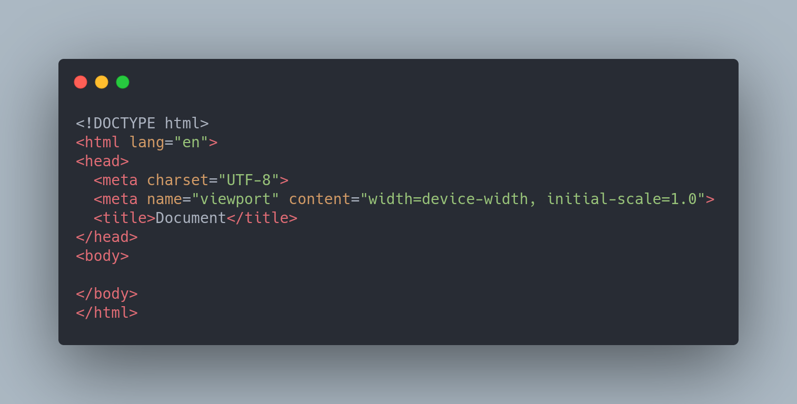

Ao acessar uma página web através de um navegador, ele é capaz de interpretar o código HTML e renderizá-lo de forma compreensível para o usuário final, exibindo textos, botões etc. com as configurações definidas por meio das diversas tags que essa linguagem dispõe
A estrutura básica de uma página HTML pode ser vista na Listagem 1, na qual podemos ver as principais tags que são necessárias para que o documento seja corretamente interpretado pelos navegadores.
Linha 1: a instrução DOCTYPE deve ser sempre a primeira a aparecer em uma página HTML para indicar ao browser qual versão da linguagem usada. Nesse caso, estamos trabalhando com a HTML5, versão na qual a declaração do DOCTYPE é bastante simples, como podemos ver na listagem;
Linhas 2 e 10: abertura e fechamento da tag html, que delimita o documento. Sendo assim, todas as demais tags da página devem estar nesse espaço;
Linhas 3 e 6: abertura e fechamento da tag head, que define o cabeçalho do documento. O conteúdo nesse espaço não é visível no browser, mas contém instruções sobre seu conteúdo e comportamento. Dentro dessa tag, por exemplo, podem ser inseridas folhas de estilo e scripts;
Linha 4: a tag meta, nesse caso, especifica qual conjunto de caracteres (character set ou charset) será usado para renderizar o texto da página. O UTF-8 contém todos os caracteres dos padrões Unicode e ASCII, sendo, portanto, o mais utilizado em páginas web. A mesma tag meta, porém com outros atributos, pode ser utilizada para outros fins, como na SEO (Search Engine Optimization);
Linha 5: a tag title define o título da página, aquele que aparece na janela/aba do navegador;
Linhas 7 e 9: abertura e fechamento da tag body, marcando o espaço no qual deve estar contido o conteúdo visual da página. As demais tags que representam texto, botões etc. devem ser adicionadas nesse intervalo;
OBS: A principal característica do HTML é que existe uma tag de início e uma de fim. Então se você abre um parágrafo <p> você necessariamente precisa fechar ele em algum momento com </p>. A Estrutura básica do HTML se divide em head e body (cabeçalho e corpo), onde o head é para colocar dados úteis para interpretação do navegador, mas o usuário só vai enxergar o que for colocado dentro do body. Futuramente veremos mais coisas que podem ser colocadas dentro do head.
Outro aspecto importante da linguagem é que ela é case insensitive, ou seja, não leva em consideração a diferença entre letras maiúsculas e minúsculas. No entanto, o uso apenas de letras minúsculas tem sido utilizado como padrão pelos desenvolvedores. Use somente minúsculas
Cabeçalhos são normalmente utilizados para identificar páginas e seções e possuem aparência diferenciada do restante do texto. No HTML há seis níveis de cabeçalhos/títulos que podem ser utilizados por meio das tags h1, h2, h3, h4, h5 e h6, sendo h1 o maior/mais relevante e h6 o menor/menos relevante.
A diferença está no tamanho de cada um. Olha só nessa referência
Parágrafos de texto são gerados na HTML por meio das tags <p> </p>. Esse é um exemplo de tag cuja disposição na tela se dá em forma de bloco, ou seja, um parágrafo é posto sempre abaixo do outro.
Olha essa referência
A inserção de imagens em uma página HTML pode ser feita por meio da tag img, que recebe no atributo src o endereço do arquivo a ser carregado. Além desse, outros dois atributos importantes são o alt, que indica um texto alternativo que será exibido caso o arquivo não possa ser carregado, e title, que indica o texto que aparecerá como tooltip ao passar o mouse sobre a figura.
Olha essa Referência
Links são normalmente utilizados para direcionar o usuário para outras páginas, ou para outras partes da mesma página. Nos dois casos, utilizamos a tag a, que possui o atributo href no qual indicamos o destino daquele link.
Olha essa Referência
Tabelas são elementos utilizados com frequência para exibir dados de forma organizada em linhas e colunas. No HTML, elas são formadas por três tags básicas: table, para delimitar a tabela; tr, para indicar as linhas; e td para formar as colunas.
Olha essa Referência
Listas são elementos úteis para organizar e ordenar itens que estão relacionados de alguma forma. No HTML é possível criar três tipos de listas: ordenadas (com a tag ol), não ordenadas (com a tag ul), e de definição (por meio da tag dl).
Vamos manipular principalmente a não ordenada e a ordenada
Não ordenada Referência
ordenada Referência
As tags de formatação de texto ajudam a destacar trechos da parte escrita da página, seja para fins de SEO ou por requisitos do conteúdo. Formatações como negrito e itálico podem ser aplicadas com facilidade utilizando as várias tags disponíveis para esse fim:
Olha essa Referência
Ainda tem mais algumas TAGs, mas com essas nós já conseguimos fazer a prática 01
Referências: https://www.devmedia.com.br/html-basico-codigos-html/16596